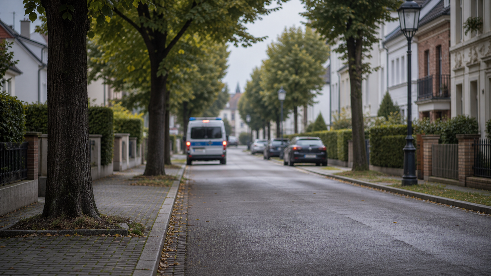

Tagesarchiv
58 regionale Meldungen
Alle Karten öffnen die jeweilige Originalmeldung.

Hessen Aktuell
Regionale Meldungen dieses Tages, gesammelt aus den aktiven Quellen und nach Stadt sowie Thema lesbar.
Tagesarchiv
Alle Karten öffnen die jeweilige Originalmeldung.
Meldungen
Kassel · Verkehr
Anlässlich des Quartiersfests im Vorderen Westen werden am Samstag, 27. Juni 2026, die Friedrich-Ebert-Straße zwischen Annastraße und August-Bebel-Platz sowie Teile des August-Bebel-Platzes von 11 Uhr bis nach.
Kassel · Verkehr
Eine neue Fuß- und Radwegbrücke über die Fulda zwischen Kassel-Wolfsanger und Niestetal-Sandershausen kann die Verbindung beider Kommunen deutlich verbessern. Dies hat jetzt eine Machbarkeitsstudie bestätigt, die die.

Kassel · Politik
Mimi Energy und der Rabe Rudi sind in vier Kasseler Grundschulen unterwegs. In einem interaktiven Theaterstück lernen die Kinder, was Energiesparen überhaupt genau heißt und wie man das Klima schützt. Unterricht mal.
Kassel · Sicherheit
Fachdienst Tierschutz vom Landkreis Kassel gibt Tipps für Haus- und Nutztierbesitzer Weitere Details, Hintergründe und vollständige Angaben stehen in der verlinkten Originalmeldung.
Kassel · Politik
Bund und Länder müssen angesichts der kommunalen Finanzkrise endlich handeln Weitere Details, Hintergründe und vollständige Angaben stehen in der verlinkten Originalmeldung.
Kassel · Veranstaltungen
Am Sonntag, 28. Juni, spielt das Heeresmusikkorps Kassel wieder am Schloss Wilhelmsthal Weitere Details, Hintergründe und vollständige Angaben stehen in der verlinkten Originalmeldung.
Kassel · Sicherheit
Landkreis Kassel zeichnet besonderen Einsatz für die Umwelt aus Weitere Details, Hintergründe und vollständige Angaben stehen in der verlinkten Originalmeldung.
Kassel · Politik
Das KaFöG-geförderte Projekt „Bewegung als Brücke“ bringt die Wilhelm-Leuschner-Schule und das AWO Seniorenzentrum zusammen
Kassel · Polizei
Die Polizei blickt auf eine gelungene Präventionsaktion am vergangenen Samstag beim diesjährigen Sommerfest in Großalmerode zurück und codierte vor Ort zahlreiche Fahrräder und E-Bikes.
Kassel · Polizei
Die Zahl der polizeilich registrierten Verkehrsunfälle in Nordhessen lag im Jahr 2025 bei leichtem Rückgang in etwa auf dem Vorjahresniveau.

Kassel · Polizei
Zu einem personellen Wechsel bei der Funktion des "Schutzmanns vor Ort" kam es kürzlich bei den Polizeistationen in Eschwege und Sontra.
Kassel · Polizei
Am vergangenen Mittwoch (15.04.) stellten Bürgermeisterin Carolin Gisselmann und Jugendkoordinator Alexander Först von der PD Werra-Meißner die insgesamt 7 neuen Leon-Hilfe-Inseln in Herleshausen vor.
Kassel · Polizei
Am Montag, 17.03.2026, fand an der Bundespräsident-Theodor-Heuss-Schule in Homberg (Efze) eine weitere Veranstaltung der Dialogreihe "Cops im Dialog - Polizei und Schule im Austausch" statt.
Frankfurt · Polizei
Frankfurt (ots) - (rü) Am gestrigen Montag (22.06.2026) ging bei der Polizei gegen 18:45 Uhr eine Mitteilung ein, dass ein Mann mitten auf der Bockenheimer Landstraße auf Höhe der 20er-Nummern mit einem Schlagstock.
Frankfurt · Polizei
Frankfurt (ots) - (bo) Gestern Mittag (22. Juni 2026) soll ein 20-Jähriger einem Mitarbeiter einer Kirchengemeinde in der Innenstadt einen "Hitlergruß" gezeigt haben. Nach aktuellen Erkenntnissen befand sich der.
Frankfurt · Polizei
Frankfurt (ots) - (bo) Gestern Vormittag (22. Juni 2026) ereignete sich in Sachsenhausen ein Trickdiebstahl zum Nachteil eines 90-jährigen Mannes. Die Polizei sucht Zeugen. Nach aktuellen Erkenntnissen befand sich der.
Frankfurt · Polizei
Frankfurt (ots) - (ha) Bereits am 17. Mai 2026 kam es nach aktuellen Erkenntnissen im Bereich der "Steigschneise" zu einer Gefährdung des Straßenverkehrs, im Zuge derer mehrere Personen einem Fahrzeug ausweichen.
Frankfurt · Polizei
Frankfurt (ots) - (ha) Am gestrigen Sonntagabend (21. Juni 2026) soll es in einem Frankfurter Schwimmbad zu einem sexuellen Übergriff gekommen sein. Die Polizei nahm einen 50-Jährigen fest. Nachdem die Polizei von.

Frankfurt · Verkehr
Gleis- und Weichenbau Mainzer Landstraße Weitere Details, Hintergründe und vollständige Angaben stehen in der verlinkten Originalmeldung.
Frankfurt · Sicherheit
VGF setzt Informations-Veranstaltungen rund um die Sicherheit fort – Zwei Termine im Juni. Weitere Details, Hintergründe und vollständige Angaben stehen in der verlinkten Originalmeldung.
Frankfurt · Verkehr
U-Bahn-Stationen "Niddapark" und "Römerstadt" werden barrierefrei Weitere Details, Hintergründe und vollständige Angaben stehen in der verlinkten Originalmeldung.
Frankfurt · Verkehr
Fans dank 24-Stunden-Angebot mit U-Bahnen, Trams und Metrobussen auch bei späten Partien bestens bedient. Weitere Details, Hintergründe und vollständige Angaben stehen in der verlinkten Originalmeldung.
Frankfurt · Verkehr
Zu finden auf dieser Seite im Download-Bereich. Weitere Details, Hintergründe und vollständige Angaben stehen in der verlinkten Originalmeldung.
Frankfurt · Wirtschaft
Unter anderem aufgrund höherer Bezugskosten steigt der Trinkwasserpreis leicht zum 1. Juli. Weitere Details, Hintergründe und vollständige Angaben stehen in der verlinkten Originalmeldung.
Frankfurt · Wirtschaft
Nach den erfolgreichen Testläufen der beiden leistungsstarken Gasturbinen folgen die nächsten Schritte der laufenden Inbetriebnahme des wasserstofffähigen Vorbildkraftwerks.
Frankfurt · Verkehr
Ende Juni 2026 beginnt der Teilrückbau des Schornsteins der ehemaligen Sarotti-Fabrik in Hattersheim Weitere Details, Hintergründe und vollständige Angaben stehen in der verlinkten Originalmeldung.
Frankfurt · Verkehr
In der Bockenheimer Landstraße beginnt in Kürze der Ausbau der klimaschonenden Fernwärme. Die Arbeiten am Stromnetz werden ebenfalls fortgesetzt.

Frankfurt · Wirtschaft
Mainova bündelt das Nachwuchsengagement und sorgt für Energie für junge Köpfe. Weitere Details, Hintergründe und vollständige Angaben stehen in der verlinkten Originalmeldung.
Wiesbaden · Politik
Der Magistrat der Landeshauptstadt Wiesbaden hat am Dienstag, 23. Juni, die Kommunale Wärmeplanung beschlossen. Die Stadt wird den Wärmeplan nun fristgerecht bis Dienstag, 30. Juni, beim Land Hessen.
Wiesbaden · Sicherheit
Der Deutsche Wetterdienst warnt aktuell vor extremer Wärmebelastung in Wiesbaden. Die Landeshauptstadt Wiesbaden nimmt dies zum Anlass, auf ihre Tipps und Informationen für ein gesundheitsbewusstes Verhalten an heißen.
Wiesbaden · Politik
Der Werkraum, Langgasse 5–9, ist am Montag, 29. Juni, und Dienstag, 30. Juni, wegen Aufbauarbeiten für den kommenden Themenmonat „Sommer in der Stadt“ geschlossen.
Wiesbaden · Politik
Genau vor zehn Jahren stimmten die Bürgerinnen und Bürger des Vereinigten Königreichs für den Austritt aus der Europäischen Union; mit dem Abschluss der Übergangsphase wurde der Brexit vollzogen. Wiesbaden steht über.
Wiesbaden · Politik
Der für Donnerstag, 25. Juni, geplante Spaziergang im Rahmen der Aktionswoche gegen Einsamkeit unter dem Motto „Du gehörst dazu“ vom Biebricher Schloss zur Galatea-Anlage muss aufgrund der erwarteten sehr hohen.
Wiesbaden · Polizei
Wiesbaden (ots) - 25-Jähriger aus Wiesbaden vermisst, Wiesbaden, Sonntag, 21.06.2026, 12:30 Uhr (kq)Seit dem vergangenen Sonntag wird der 25-jährige Pierre Sauer aus Wiesbaden vermisst. Herr Sauer verließ am Sonntag um.
Wiesbaden · Polizei
Wiesbaden (ots) - 1. Exhibitionist im Grundweg, Wiesbaden-Biebrich, Grundweg, Montag, 22.06.2026, 19:10 Uhr (kq)Am Montagabend kam es im Wiesbadener Grundweg zu einer exhibitionistischen Handlung. Gegen 19:10 Uhr.
Wiesbaden · Polizei
Wiesbaden (ots) - (LH)Bei den aktuell hohen Temperaturen zieht es viele Menschen zur Abkühlung an die hessischen Gewässer. Die Wasserschutzpolizei weist auf die besonderen Gefahren des Badens in Gewässern sowie die.
Wiesbaden · Polizei
Wiesbaden (ots) - Gemeinsame Pressemitteilung des Hessischen Landeskriminalamts und des Regierungspräsidiums Gießen Gewaltsame Ereignisse erschüttern. Menschen, die Opfer einer Gewalttat geworden sind, befinden sich.
Wiesbaden · Polizei
Wiesbaden (ots) - (cp)Die Öffentlichkeitsfahndung nach dem vermissten 51-jährigen Mann aus Wiesbaden von heute, 16:39 Uhr wird hiermit zurückgenommen. Der Mann konnte am frühen Abend wohlbehalten in Wiesbaden.
Darmstadt · Verkehr
Ab 23. Juni geänderte Öffnungszeiten und Bücherbus stellt Fahrten bis nach den Sommerferien ein. Weitere Details, Hintergründe und vollständige Angaben stehen in der verlinkten Originalmeldung.
Darmstadt · Politik
Erfolgreicher Start mit 285.000 Kilometern nach 14 Tagen. Weitere Details, Hintergründe und vollständige Angaben stehen in der verlinkten Originalmeldung.
Darmstadt · Politik
Wissenschaftsstadt Darmstadt beteiligt sich am bundesweiten Aktionstag zur Lösung der kommunalen Finanzkrise Weitere Details, Hintergründe und vollständige Angaben stehen in der verlinkten Originalmeldung.
Darmstadt · Politik
Spitzenvertreter südhessischer Kommunen und Gebietskörperschaften fordern nachhaltige Finanzreform Weitere Details, Hintergründe und vollständige Angaben stehen in der verlinkten Originalmeldung.
Darmstadt · Politik
Oberbürgermeister Hanno Benz und Landrat Klaus Peter Schellhaas: "Die Zukunft unserer Region endet nicht an Verwaltungsgrenzen"
Darmstadt · Polizei
Darmstadt (ots) - Gemeinsame Pressemeldung der Staatsanwaltschaft Stuttgart und des Polizeipräsidium Ludwigsburg Zwei Männer im Alter von 33 und 20 Jahre befinden sich seit dem 21.06.2026 in Untersuchungshaft, nachdem.
Darmstadt · Verkehr
Darmstadt (ots) - Kriminelle nahmen in der Virchowstraße ein Verkehrsschild ins Visier und beschädigten es mit einem spitzen Gegenstand. Zwischen Montag (15.6.), 8 Uhr, und Montag (22.6.), 9 Uhr, näherten sich die.
Darmstadt · Polizei
Darmstadt (ots) - Mit Beginn der Hauptreisezeit im Sommer erinnert der Zoll Reisende daran, sich bereits vor Urlaubsantritt über die geltenden Zollbestimmungen zu informieren. Wer Souvenirs, Einkäufe, Genussmittel.
Darmstadt · Polizei
Seeheim/Darmstadt (ots) - Nachdem es am Samstag (20.6.) zu einer Verkehrsunfallflucht kam und ein 23-Jähriger hierbei verletzt wurde, konnte im Rahmen der eingeleiteten Fahndung ein 47 Jahre alter Tatverdächtiger.
Darmstadt · Polizei
Darmstadt (ots) - Am Sonntagnachmittag (21.6.) sorgte ein bislang unbekannter Täter im Bereich der Karlsruher Straße, Ecke Rüdesheimer Straße für Aufsehen. Gegen 13.30 Uhr soll der Unbekannte unter anderem lautstark.
Hessen · Verkehr
Bus und Bahn sollen eine attraktive Alternative zum Auto sein. Dazu gehören faire Preise ebenso wie ein verlässliches und leistungsfähiges Angebot.
Hessen · Verkehr
Berufsorientierung gelingt am besten dort, wo junge Menschen die Arbeitswelt unmittelbar erleben können. Weitere Details, Hintergründe und vollständige Angaben stehen in der verlinkten Originalmeldung.
Hessen · Verkehr
Mit der Strategie setzt Hessen auf eine stärkere Vernetzung von Wissenschaft, Kapitalgebern, Unternehmen und Start-ups, um Gründungen schneller in erfolgreiche Wachstumsunternehmen zu überführen.
Hessen · Verkehr
Höhere Kraftstoffpreise treffen Pendlerinnen und Pendler, Familien, Handwerksbetriebe, Händlerinnen und Händler genauso wie große Unternehmen direkt.
Hessen · Verkehr
Im Rahmen der Sonder-Bauministerkonferenz in Berlin haben sich die Länder intensiv mit der europäischen Wohnungs- und Baupolitik befasst.
Hessen · Politik
An mehr als 400 Schulen wurde landesweit beim „Sauberhaften Schulweg“ Müll gesammelt. Weitere Details, Hintergründe und vollständige Angaben stehen in der verlinkten Originalmeldung.
Hessen · Polizei
Bei der ROADPOL-Kontrollwoche „Alcohol & Drugs I“ sind 5.328 Fahrzeugführer kontrolliert und 198 Verstöße festgestellt worden. Die Aktion setzte auf Kontrollen und Aufklärung.
Hessen · Politik
Zum 1. Juli soll die Besoldung von Beamtinnen, Beamten sowie Richterinnen und Richtern um 3,02 Prozent steigen. Im Ländervergleich liegt Hessen damit auf Spitzenplätzen.
Hessen · Polizei
Beim 63. Hessentag in Fulda hat die Polizei eine positive Bilanz gezogen. Mehr als eine Million Menschen haben das Landesfest überwiegend friedlich besucht.
Hessen · Politik
Integrationsministerin Hofmann hat 19 Stipendiatinnen und Stipendiaten der START-Stiftung empfangen. Das Programm begleitet engagierte junge Menschen auf ihrem Bildungsweg.